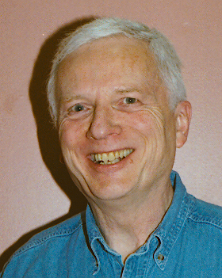

Laureate Online
Education
University of Liverpool M.Sc in IT
Introducing Dennis Hamilton
|
|
Laureate Online
Education |

1. MSC-CS: Computer Structures, the 1st course we all take
2.
MSC-SE: Software Engineering
3.
MSC-JV: Java with OOP (my programming requirement)
4.
MSC-WA: Web Applications
5.
MSC-DB: Databases (my technologies requirement)
6.
MSC-CC: Computer Communications
7. MSC-SN: Information Security Engineering
8. MSC-PM: IT Project Management
9-12. MSC-DS: Project Dissertation, making up 1/3 of the M.Sc in IT, was undertaken from late September 2004 until September 28, 2005. I overlapped the beginning with MSC-PM (bad idea) and later went into a sudden-death extension until September 28. On that date, I failed to submit a thesis and failed this part of the program. Although there are ways to continue, I chose to abandon the dissertation and to accept a PostGraduate Diploma for the course work.
Although I have not submitted a thesis, I have considerable research and material that I will complete and publish privately. This will be found on the TROST: Open-Systems Trustworthiness site and also in projects under ActiveODMA and nfoWare. There will be announcements and summaries of key details on my webb logs, building on what has already been seen about Symbols of Trust and related topics.
When I began the program, I said this about myself in my introductions to fellow students at the beginning of each module:
I am in this program for a serious tune up of my skills and to equip myself to teach at this level. My desire is to pursue computer science as a scholar and as a teacher. My intention is to excel in my participation here, and in the future beyond.
The connection with teaching is the fact that the public universities here accept an M.Sc as a qualification for serving as a non-tenured lecturer. I considered that a valuable outcome. I did not get the merit badge. I had a number of breakthroughs in managing myself as a researcher and scholar. Only my continued performance will demonstrate that to be as valuable as I believe it is. In all other respects, including the tune up and exposure to areas that I had not visited in many years, the experience was invaluable. Without the tension between the demands of the dissertation and the research pursuits that opened up out of it, I can now pursue my projects at a more organic but deliberate pace.
If you are fascinated by the prospects for online learning, and want to obtain a postgraduate degree, I recommend the Laureate program and others like it. I particularly enjoyed the discussion-oriented structure by which, in effect, the students in a module deliver the course in a mutual dance inside of the well-defined syllabus and study materials. I also learned that I am a great student (with half A and half A* grades, on the British postgraduate system of the University of Liverpool). With regard to the thesis, my disability at IT and arbitrary schedules is completely exposed. I still am equipped to divulge my love for computing, even if IT practice is not my strong suit.
I live in Seattle, Washington, with my wife Victoria (Vicki) and our 3 cats. We are on Pacific Daylight Time, gmt-0700, until the end of October. I reached my 65th birthday in January 2004. We celebrated with a trip to Rome and Florence, in the country that Vicki has always dreamed to live in. Vicki is a master potter and teacher.
We have 3 sons, all grown and unmarried. The youngest, Yogi Japendranatha, is at the Hindu monastery on Kauai, Hawaii, where he supports the monastery's network, among other duties. The oldest son lives in Portland, Oregon where he is a rock musician and in a recovery program. The middle son is a professional stage manager for local theatrical productions in Seattle.
Vicki and I have 3 sisters between us. The middle one, my youngest sister, Carol, works in special education in St. Cloud, Minnesota. Vicki's sister Elizabeth and my sister, Judy, live nearby to Seattle.
I wrote my first computer program (in Fortran) in May of 1958 while I was working as an engineering aide at Boeing in Renton, Washington. I had dropped out of college the year before. I had been interested in computers before that, and I have worked in practically all aspects of software since. Some of my experiences as a young and then not-so-young developer are described in an on-line article on the O'Reilly Network.
By 1995 I had completed my undergraduate education with a Bachelor of Arts degree in an external degree program. I earned credits in computer science by taking the Graduate Record Examination in CS and challenging the major. I then focused on philosophy, economics, and anthropology in a variety of classroom courses over the years.
My last corporate employment was at Xerox Corporation, where I worked as a software scientist and system architect of document-management systems. I retired at the end of 1998 and I have continued as a semi-retired consultant. The most rewarding consulting assignments have included travel to Japan, where I have several colleagues.
I have also committed myself to produce some software:
My first love is always computing at the personal level, and that now includes collaboration and coordination of work by computers. I want to provide information-processing components that can be used to blend collaborative computing applications together.
I have also succumbed to blogging:
-- Dennis E. Hamilton
Seattle, Washington
2005 May 11
|
|
You are navigating Orcmid's Lair |
created 2004-02-05-17:27 -0800 (pst) by orcmid |